2015-2018 UK - Rentalcars.com
Design impact is measurable
The first time in my life I have relocated completely to a different country with a different language and culture. But in 2015 I didn't know that especially the ux design culture is so much different and more advanced in the UK in compare to Gemany.
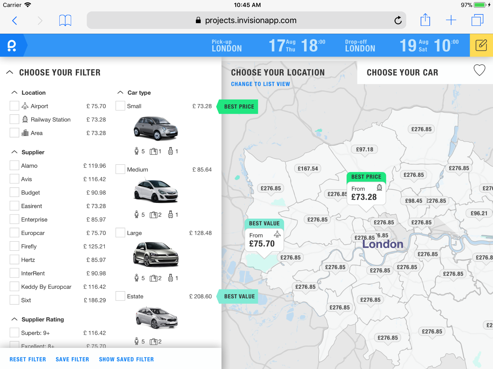
Data driven success culture
Conversion Topics
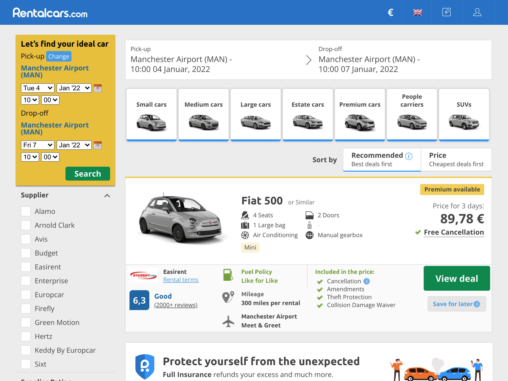
Topic 01
Working at Rentalcars.com
- Rentalcars.com is a very successful car hire platform from Manchester. When I left they were joining Booking.com under the new name Booking.Go. I took an up to date screenshot from their website and can still find some of the elements I've designed.
- For example I've put a lot of effort in overworking the icons next to the car image which resulted in a very successful A/B experiment.
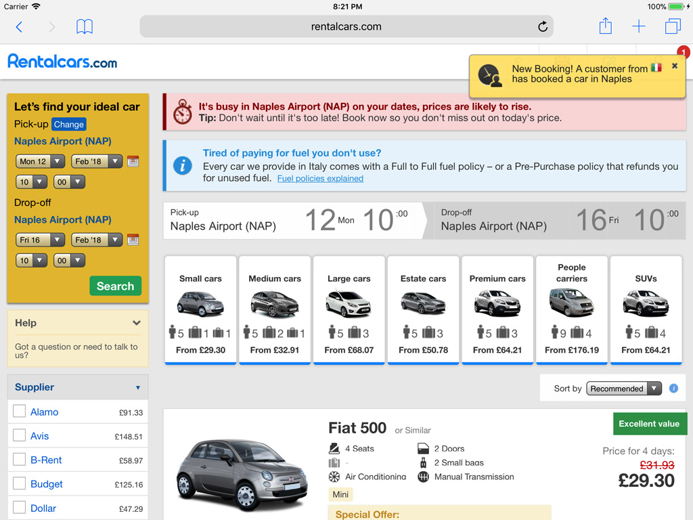
Working at Rentalcars.com
North Star
- When I started in 2015 Rentalcars.com had a very clear single KPI, increasing bookings per day (BPD). The A/B test platform provided the data which helped to decide weather a change on the platform was making more money or not.
- On the old screenshot you can see on the top of the page the urgency messages which led to very successful A/B experiments.
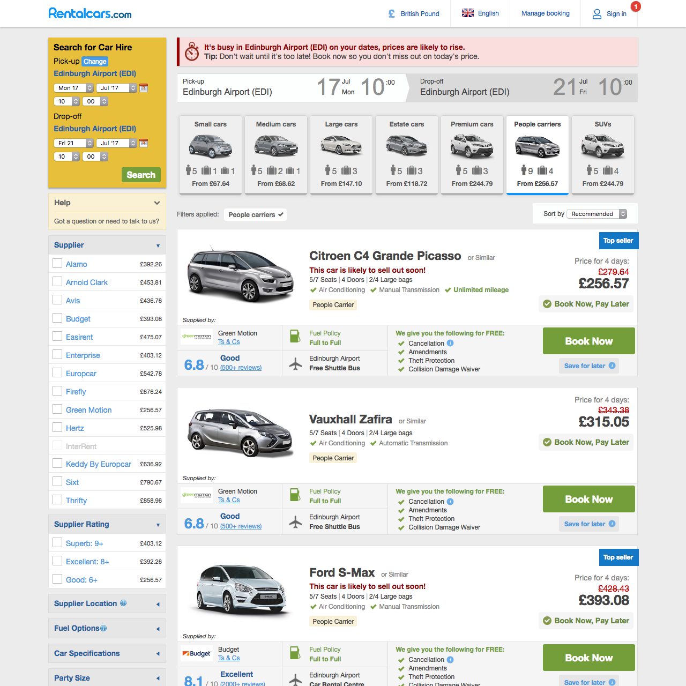
Working at Rentalcars.com
Crossfunctional teams and ideation
- Crossfunctional teams with develpers, designers and product managers were responsible for a specific part of the user journey. Our international team took care of the 'search results' and 'car details' pages. To fill our backlog we organised weekly ideation sessions where we promoted our experiments with a hypothesis driven approach.
- One source for my ideas have been vision prototypes I've discussed and tested with management, colleagues and customers.
Topic 02
UI Design studies
- A purly A/B testing driven design development only allows very small UI changes. So you would not expect that UI vision prototyping can help here much. On the screenshot you can see a flow where I experiemented with different gray tones to focus and highlight on important elements of the UI.
- From this I took the idea of making the background colour for all pages more dark, which was a successful gold experiment on the A/B test platform.
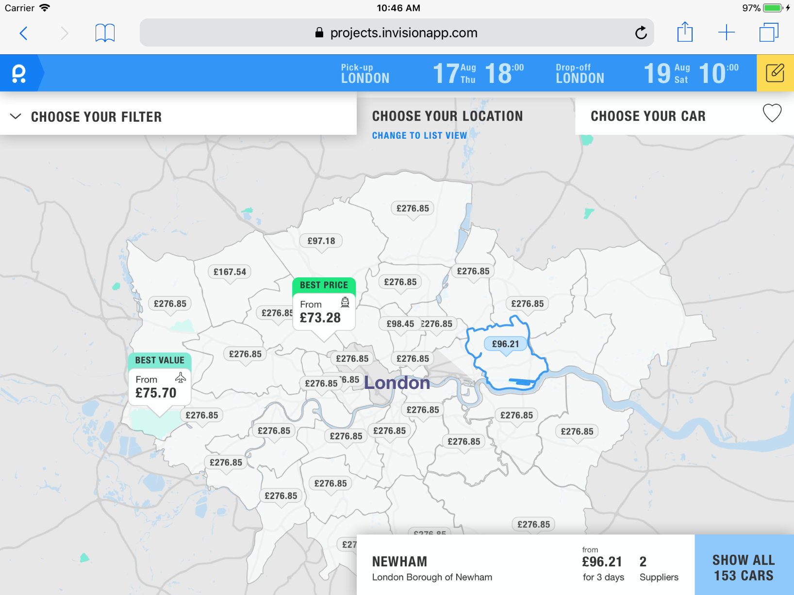
UI Design studies
Map focus design study 1 of 3
- Part of my role as UX Designer in our team was keeping in touch with our user researchers. Customers complained about the fact that it was too busy on our map search to really interact with it. In this UI design study I used the prototyping tool Sketch together with screenshots from real maps I've coloured before with a free tool by Google.
- You can see on the screenshot how this helped to create a design that would allow more focus on what is important for our users.
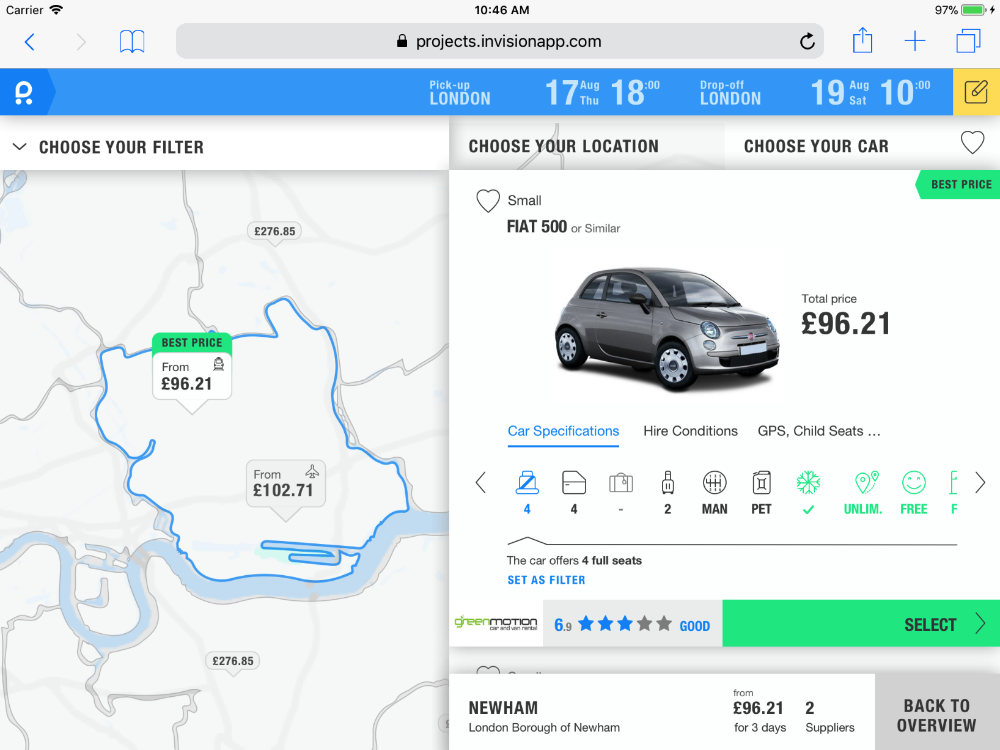
UI Design studies
Map focus design study 2 of 3
- On this screenshot, showing the car details area together with the map, my passion for iconography and white space is quite recognisable. It was still the time where not every tablet had a Retina display and icons needed to support low resolution screens.
- This ux design approach allowed bigger icon sizes and more accessible information on the car card.
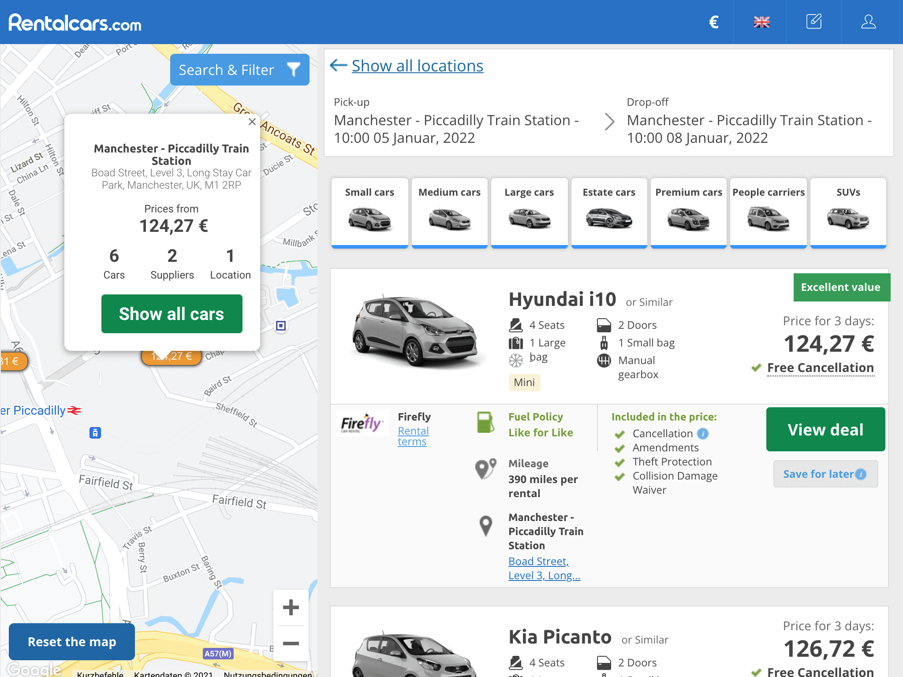
UI Design studies
Map focus design study 3 of 3
- On this screenshot I took from the current Rentalcars.com webpage you can see that some elements of the study made it into this latest UI. For example the car details are shown next to the map and the price message has a green background and still sits on the top right.
- Personally I think the clarity of the information was much better in my UI design study. Unfortunately, A/B testing would never allow such big design changes.
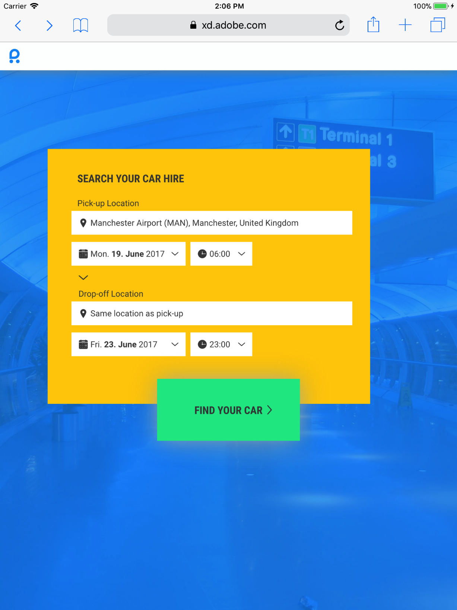
UI Design studies
All brand UI study 1 of 2
- A huge issue was that a brand team had created a lot of good items for the UI design. There was a good bunch of icons together with amazing new colours. The problem was, that changing every colour or icon in a big bang approach would not fit together with the ruling A/B testing method.
- The screenshot shows a completely different search page design using the new brand colours and icons.
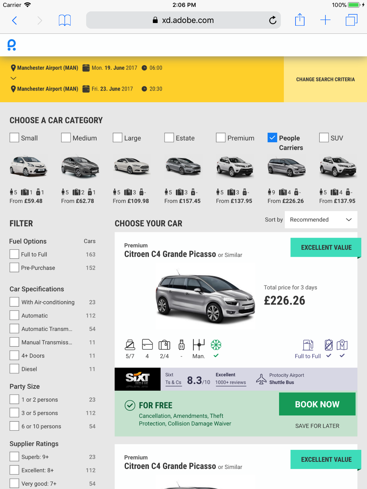
UI Design studies
All brand UI study 2 of 2
- On this search results page design, I recognized an idea that I was able to use in solving a user need discovered by our research team. Users had difficulties to recognise that the top car category filter was a filter like the filter list on the left. When having all filters on a similar gray background the component areas hierarchy was more clear for users.
- Part of these UI ideas were again sources of A/B experiemnts that were very successful.
UI Design studies
Multiple role sketching session 1 of 6
- Another great source of inspiration are wonderful colleagues from all kinds of different teams and backgrounds. Next to the weekly ideation sessions with my product team I've organised sketching sessions open to everyone. The topic of the workshop I will walk you through was again inspired by feedback from our research team.
- How is it possible to better compare car prises when chaning car details.
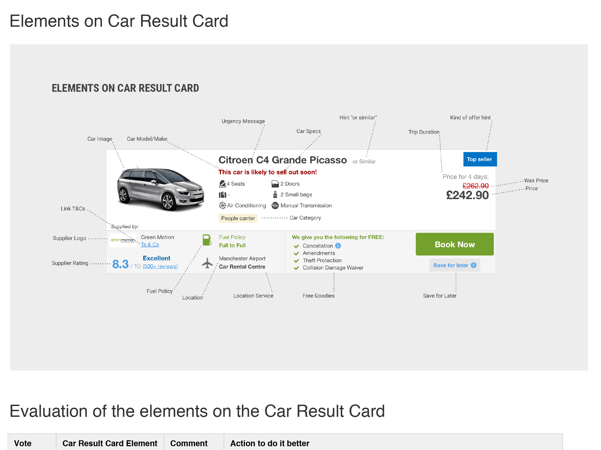
UI Design studies
Multiple role sketching session 2 of 6
- Following design thinking principles I started with empathising together to get everyone on the same page. On the screenshot you can see a diagram I created to especially explain to external colleagues the environment of the problem we are trying to solve. To define our user groups and their missions we had support from our colleagues from marketing with an latest update on their research.
- With a better understanding of our users in mind the next step was explaining the user pain points reported by user research that we try to find a solution for today.
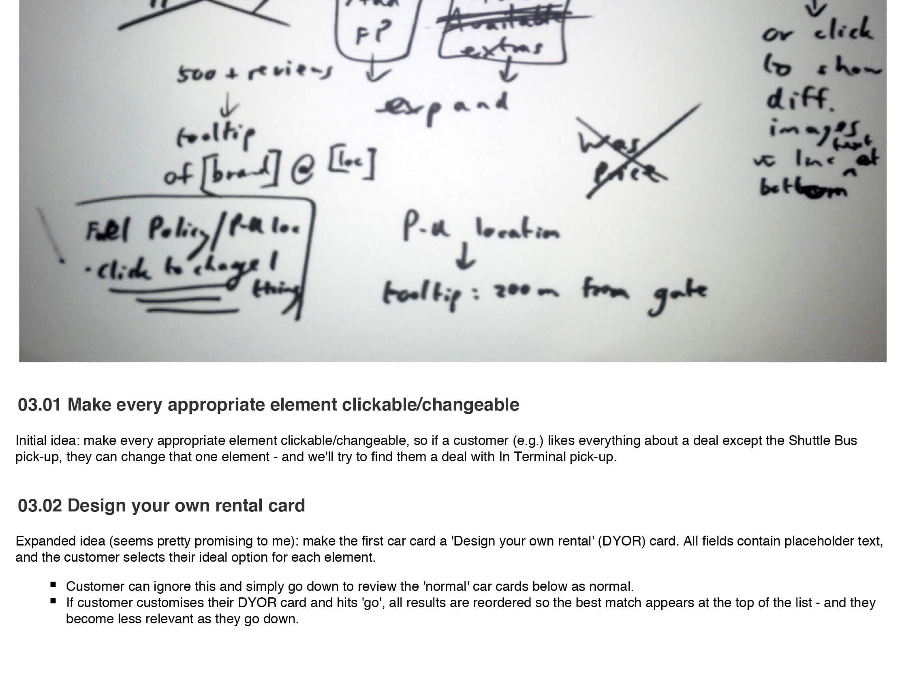
UI Design studies
Multiple role sketching session 3 of 6
- The next part of the session is the one participants are most afraid of, sketching. Because of positive experience in previous workshops I used a reduced version of the Crazy 8 method. Simply explaining that I reject this method and only expect half or no sketches from everyone really lifts the mood among the participants.
- I ask everyone to take as much Din A4 paper they need and sketch down in 10 minutes a maximum of 5 idea concepts.
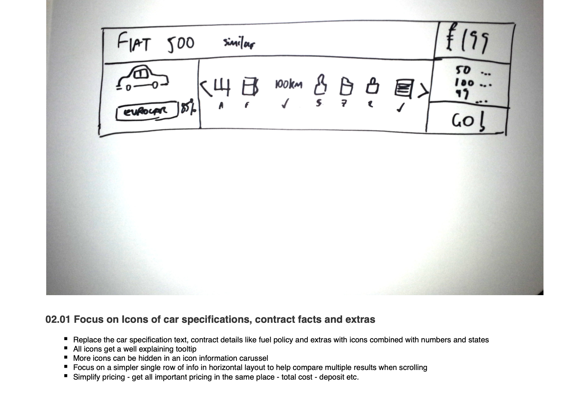
UI Design studies
Multiple role sketching session 4 of 6
- After the sketching every participant gets 2 minutes to present their ideas to the group. After the presentation, each presenter gets an additional 2 minutes for a Q&A about the concepts shown.
- It is very important to give everyone the same time slots to try to avoid extroverts receiving more biased attention.
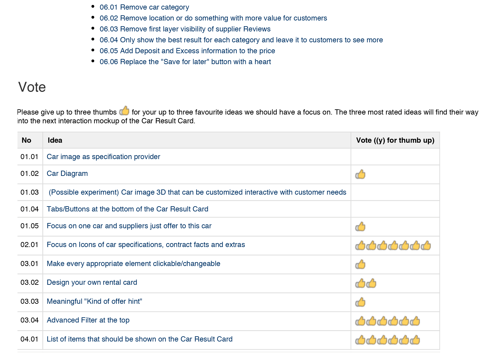
UI Design studies
Multiple role sketching session 5 of 6
- It is very difficult to do this kind of workshop on a high frequency due to the need of having a minimum of 2 hours time slot available. Since I wanted to enable a large number of colleagues from different teams to come, I experimented with outsourcing the part of choosing the best idea. I documented the different ideas in Confluence and sent the link with a deadline to vote on to the colleagues.
- This also helped introverted colleagues to have a similar neutral stage to present their ideas.
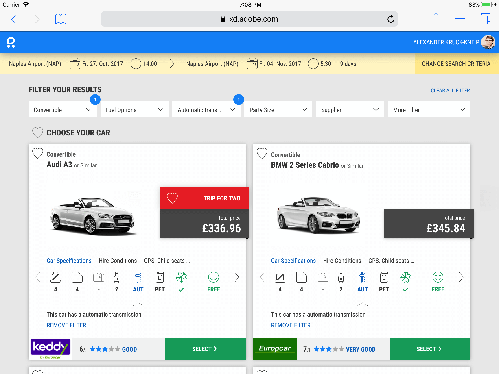
UI Design studies
Multiple role sketching session 6 of 6
- The screenshot on this page shows the hi-fi prototype I've created to test the most voted ideas. The tested concepts have been 'Focus on Icons of car specifications, contract facts and extras', 'Advanced Filter at the top' and 'List of items that should be shown on the Car Result Card'.
- The results of the testing were really promising and inspired to very succesful reduced A/B tests later on the Rentalcars.com platform.
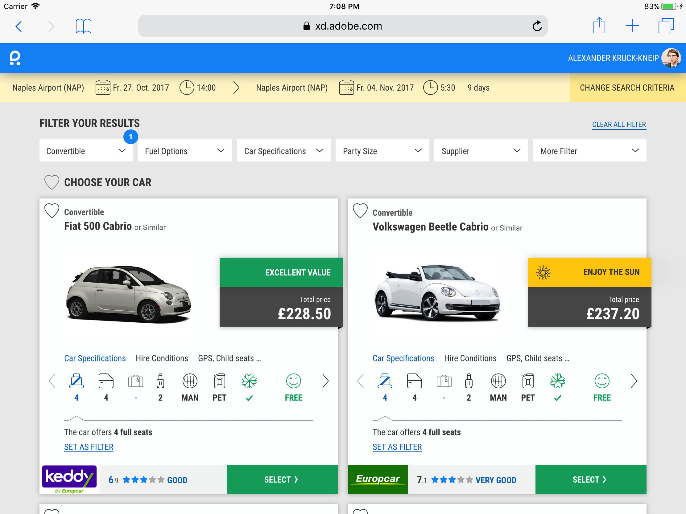
Topic 03
A/B test success stories
- With the high traffic on the platform, every smallest change could be tested for its influence in relation to the KPI bookings per day. There were three different categories of experiments.
- The red failed ones that generated fewer than 90 more bookings per day, green experiments that generated between 90 and 95 more bookings and the gold experiments with more than over 95 bpd.
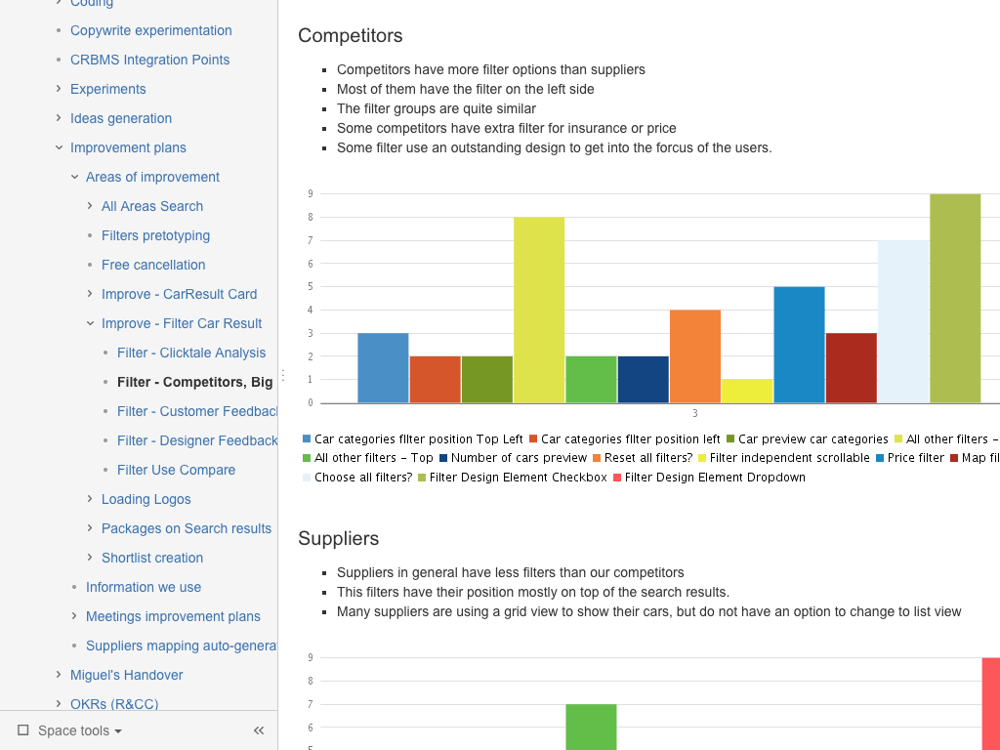
A/B test success stories
Competitor analysis 1 of 3
- Rentalcars.com was a fast paced environment with individual responcebility of the product teams to reach high quarterly goals to increase bookings. Under these conditions, those who do the bare minimum in order to generate the maximum possible short-term success will be rewarded. As a result, after a long series of successes, the quality of the code has suffered significantly.
- To achieve our quarterly goals despite the code maintenance crisis, the team asked me to develop very small but successful experiments.
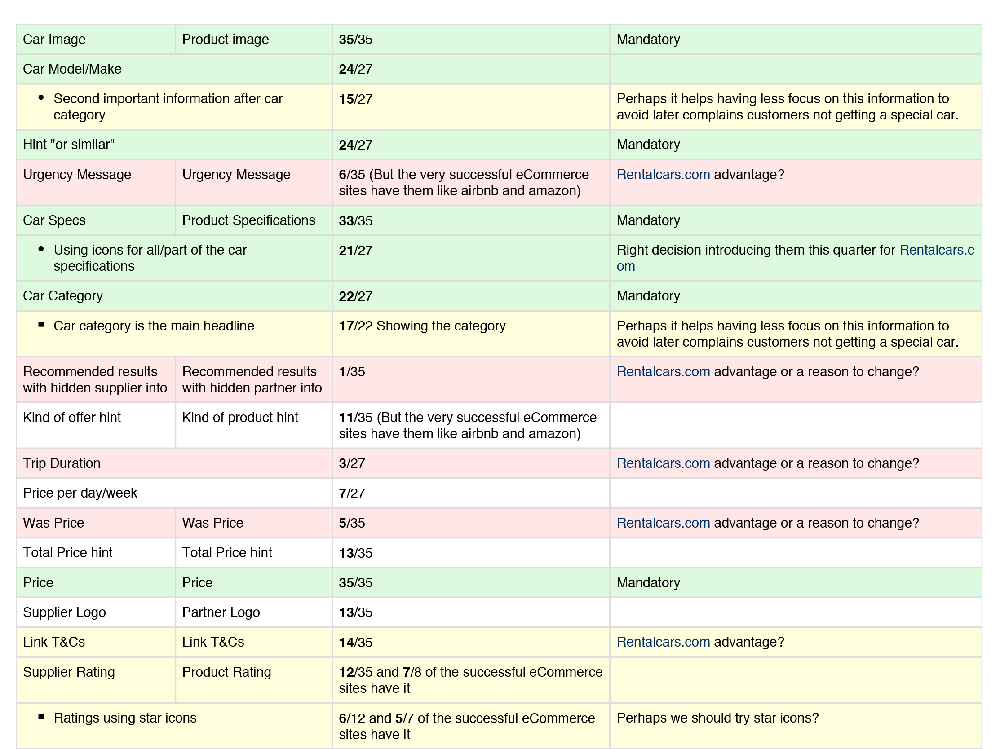
A/B test success stories
Competitor analysis 2 of 3
- In Confluence from Atlassian it was now possible to create huge but manageable tables combined with an appealing layout. I used this new feature to set up a table in order compare 30 different features/elements with 10 direct competitors, 17 biggest suppliers and 8 world best ecommerce companies.
- Altogether I created manually a matrix of 1050 intersections.
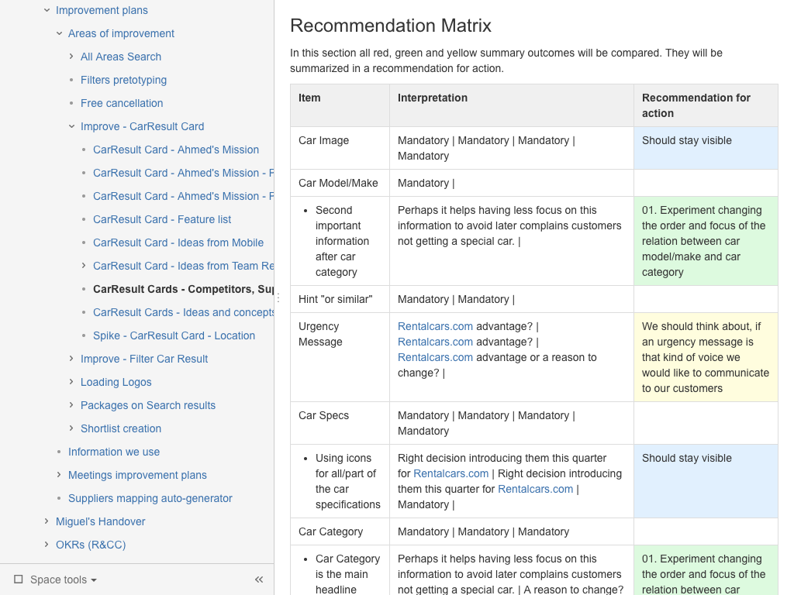
A/B test success stories
Competitor analysis 3 of 3
- With this approach I was able to quantitatively compare the use of features and elements. This data made it possible to set up a recommendation matrix that helped to find the low hanging fruit with the highest impact and lowest demand on dev resources. The idea was to open the car details in a new tab with one single line of new code.
- This gold experiment brought +103 more bookings per day or more than 1.1M in revenue per year.
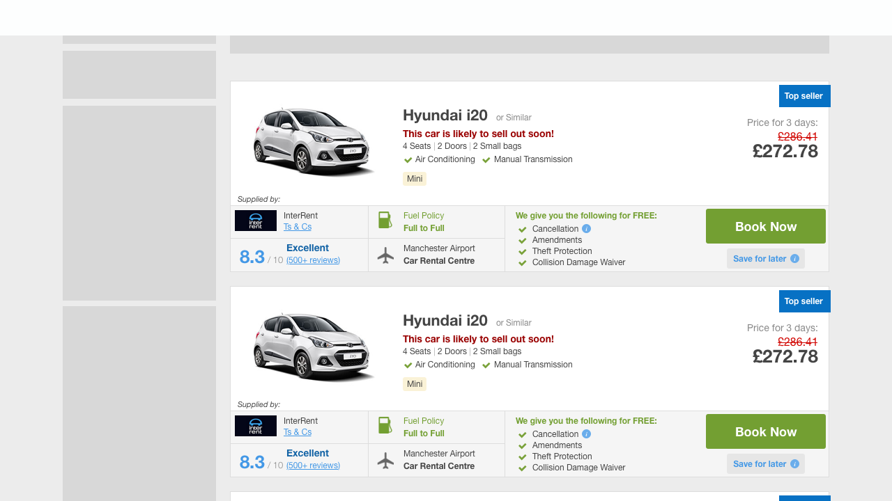
A/B test success stories
Latest UXR demands 1 of 3
- As mentioned before it was my responsibility as the UX Designer in the team to maintain the relationship to the global user research team of Rentalcars.com. Following recommendations from our UR team made it more likely that an experiment was successful since we tried to solve a real user problem.
- This time we were asked to do something to make it easier for our customers to compare the specifications of a car.
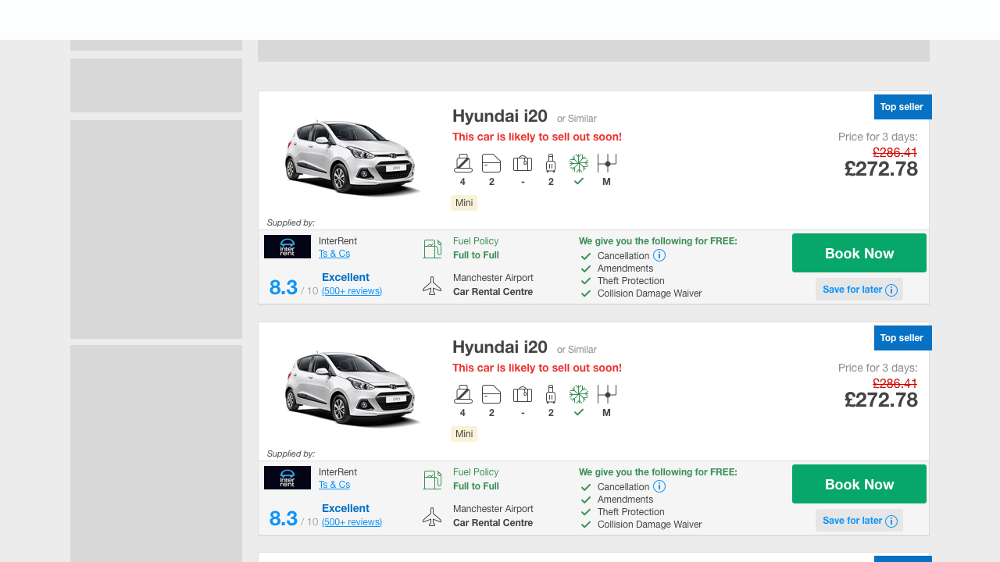
A/B test success stories
Latest UXR demands 2 of 3
- Based on the current design shown on the screenshot before I've created different variants with more or less changes. The design shown here also tries again to implement the brand design elements like the new icons and colours. Together with the product owner we decided to take another prototype to start an experiement.
- If we changed too much for the brand design, we would not know which element would have made the difference if it failed.